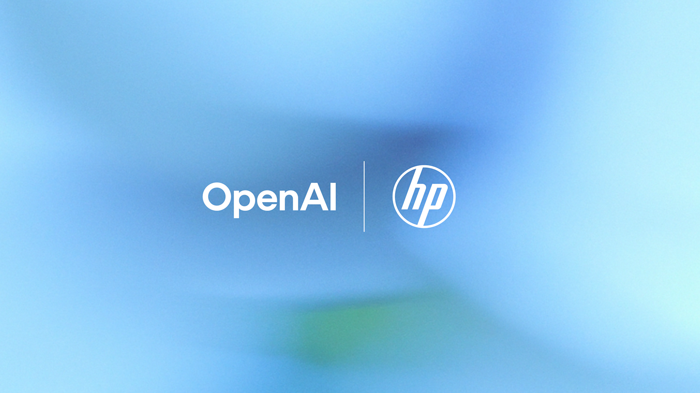

OpenAI x HP Frontier: a concrete enterprise AI pattern for Odoo Belgium, Odoo France, and Odoo Enterprise
On 28 June 2026, OpenAI announced that HP is expanding its Frontier strategic partnership after a series of successful pilots. The signal matters for AI Belgium, AI France, Odoo Belgium, Odoo France, and Odoo Enterprise: enterprise AI is no longer just about a generic assistant, but about an operable execution layer connecting support, security, software delivery, business context, and governed actions.

1. What was announced
OpenAI positions HP as a case that moves from proof of concept to scaled execution. Frontier becomes the shared operating layer for understanding which agents are running, which context they can use, what actions they are allowed to take, and how outcomes are evaluated. HP is extending that model across customer support, partner workflows, device telemetry, workforce productivity, and software engineering.
2. The numbers that actually matter
The official source includes several concrete signals: one engineer moved through 122 pull requests across 43 projects in a matter of weeks; a security team remediated several software bugs in a day when the work might otherwise have taken up to a month; HP also cites a directional estimate of roughly 82 hours per week of security-team capacity unlocked. For Odoo Enterprise, those gains map closely to real execution needs: custom modules, code review, application support, ticket automation, integration quality, and continuous maintenance.
3. Why this matters for Odoo Belgium and Odoo France
Many organizations do not fail on model quality, but on orchestration: access rights, trustworthy data, traceability, replayability, approval rules, and human oversight. The HP case shows that useful enterprise AI depends on an execution architecture. In an Odoo Belgium, Odoo France, or Odoo Enterprise context, that means connecting CRM, helpdesk, purchasing, documents, technical support, and business code to clear governance rather than bolting on a standalone chatbot.
The right question is no longer "should we have an AI agent?" but "which data, permissions, validations, and metrics make that agent usable inside Odoo Enterprise?"
Frame enterprise AI